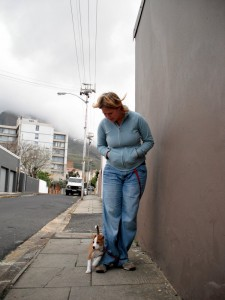

First!
Walkies!

That was the other day. We’re going for short morning walks every day now.
She’s a little nervous, but very nose-excited by it all.
Leash training is progressing. She’s getting good at not pulling.
Observe the cunning belt-leash technique: two hands free!
{kind=link}
We’re more aggressively crating now. As in doing it more.
I like it.
I confess to be jealous of the greeting that Jo gets when she comes home. Roxy is mega excited – I shall try and get a pic of the tail wagging the dog.
Now, I get that greeting when I let her out of the crate. So nice! 
She is, alas, chasing the cats more rather than less.
She doesn’t want to eat them, she just wants to play. The cats do not.
But, all in all, being a puppy daddy is worth the hard work. 
And seeing the kibbles transform into dog is awesome. She is growing fast!
Here are some pictures of Roxy sleeping. We like her sleeping. She is cute and not too mad.


awww! walkies! love that she’s leaning against Jo for support. because it’s a big scary world out there!
Indeed it is.

Note also the spin around technique, also called the loop the lease leader technique.